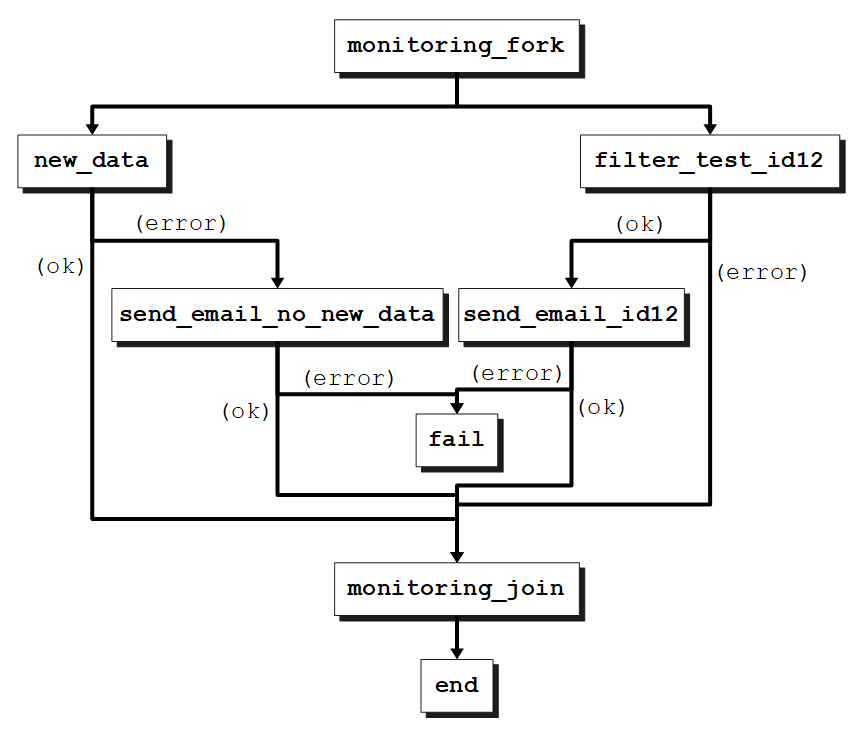

home / 2020.10.31 10:45 / spark / cluster / oozie / scala
In our current big data system we load data from many devices with very different configurations. When a new device configuration becomes known to us, we adapt our jobs as well as possible in preparation for the new data, but no amount of preparation can account for possible unexpected changes in the setup. Because we have so much variation and so many things can go wrong, it is impossible for a person to keep an eye on all the data we load. This means we need to automate the process. In this article, I will present a more complex Oozie workflow that can run some configurable Spark jobs designed to identify specific conditions in our data and notify us by email if those conditions are met.
This will be a simple but powerful Spark job that will load data from a configurable location containing Parquet files, filter that data based on a configurable array of filters and values, then count the remaining data entries. If the count is larger than a configurable amount, the job triggers the notification.
package com.cacoveanu.spark.monitoring
import java.net.URLDecoder
import com.cacoveanu.spark.ArgmapConfiguration
import org.apache.spark.sql.SparkSession
import org.apache.spark.sql.functions.col
object FilterCheck {
def main(args: Array[String]): Unit = {
val argmapConfiguration = new ArgmapConfiguration(args)
val local = argmapConfiguration.getOrElse("local", false)
val inputLocation = argmapConfiguration.getOrElse("input_location","hdfs://data/raw")
val greaterThan = argmapConfiguration.getOrElse("greater_than", 0)
val filters = argmapConfiguration.keys().diff(Set("input_location", "greater_than", "local"))
implicit val spark: SparkSession = (if (local) SparkSession.builder().master("local[*]") else SparkSession.builder())
.config("spark.sql.streaming.schemaInference", true)
.config("spark.default.parallelism", 8)
.config("spark.sql.shuffle.partitions", 12)
.getOrCreate()
var monitoredData = spark.read.parquet(inputLocation)
for (filter <- filters) {
val expectedValues: Seq[String] = argmapConfiguration.getList(filter, "").map(s => URLDecoder.decode(s, "UTF-8"))
if (expectedValues.nonEmpty) {
monitoredData = monitoredData.filter(col(filter).isin(expectedValues:_*))
}
}
val count: Long = monitoredData.count()
if (count <= greaterThan) {
throw new ConditionNotMetException
}
}
}
First thing you will notice is that we are using an ArgmapConfiguration to parse our input arguments, which will be presented below. We are first loading a few variables from our args:
local, a setting telling Spark if it should run in local mode or not;inputLocation, where our data is loaded from;greaterThat, this will be the threshold that needs to be exceeded for the email notification to get triggerred.Then, we take all other arguments for our job and treat them as filters that we need to apply to our data. Once we have all our configuration, we initialize the Spark session, where we include schema inference and some sensible defaults regarding partitions and parallelism. Then, we load the monitored data from the input location. Next, we take every filter value from the input arguments and we filter our data. Here, the ArgmapConfiguration again comes to our aid, parsing a list of desired values from an input argument.
After filtering all the data we should end up with the actual data we are monitoring. We count what remains in the dataframe and compare that count to the configured greaterThan treshold. This jobs' intended use is to monitor and get a notification once data starts appearing in our system for a specific device or a specific configuration. This is why zero is the default value of the threshold, but we can configure it if we want to only start processing data for a device once we have a specific number of recordings.
You will now notice something unusual here. If the threshold is not reached, the Spark job throws a ConditionNotMetException. This will fail the job. If the conditions are met, the job does not throw the exception, so the job does not fail. We do this because in Oozie a Spark job ends in two ways, a success or a failure. We can then branch based on the success and failure of the jobs. This is a limitation but we can design our monitoring jobs to work with this and obtain the desired behavior.
package com.cacoveanu.spark
import java.text.SimpleDateFormat
import java.util.Date
import org.apache.log4j.LogManager
class ArgmapConfiguration(args: Array[String]) {
@transient lazy val log = LogManager.getLogger(classOf[ArgmapConfiguration])
val argmap: Map[String, String] = args
.map(a => {
val firstEq = a.indexOf('=')
Seq(a.substring(0, firstEq), a.substring(firstEq+1))
})
.filter(a => a(0).nonEmpty && a(1).nonEmpty)
.map(a => a(0) -> a(1))
.toMap
def keys() = argmap.keySet
def get(name: String): Option[String] = {
argmap.get(name)
}
def getList(name: String, default: String = "", separator: String = ","): Seq[String] = {
val result = argmap.getOrElse(name, default)
val resultArray: Array[String] = result.split(separator).filter(s => s.nonEmpty)
log.info(s"$name: $resultArray")
resultArray.toSeq
}
def getOrElse(name: String, default: String): String = {
val result = argmap.getOrElse(name, default)
log.info(s"$name: $result")
result
}
def getOrElse(name: String, default: Int): Int =
argmap.get(name) match {
case Some(value) => value.toInt
case _ => default
}
def getOrElse(name: String, default: Double): Double =
argmap.get(name) match {
case Some(value) => value.toDouble
case _ => default
}
def getOrElse(name: String, default: Boolean): Boolean =
argmap.get(name) match {
case Some(value) => value.toBoolean
case _ => default
}
def getDateOrElse(name: String, dateFormat: String, default: Option[Date]): Option[Date] = {
argmap.get(name) match {
case Some(value) => try {
Some(new SimpleDateFormat(dateFormat).parse(value))
} catch {
case _: Throwable => None
}
case None => None
}
}
def doWithValue(name: String, func: String => Unit ) = {
argmap.get(name) match {
case Some(value) => func(value)
case _ =>
}
}
}
The ArgmapConfiguration is a class designed to parse our input arguments. On initialization, the input arguments provided in argumentName1=argumentValue1 argumentName2=argumentValue2 format are parsed into a map of names and values. Then, different getOrElse methods are used to both retrieve and parse the argument value from that map. the value data type is defined by the default value provided. More complex is the getList method which will attempt to split an argument value into multiple values if those values are separated by , or some other separator provided in the method call. The getList method only returns a list of strings, but can be mapped to a different data type if desired.
package com.cacoveanu.spark.monitoring
class ConditionNotMetException extends Throwable
The ConditionNotMetException is a simple Throwable that does not carry any additional information.
Another monitoring use-case that we must cover is getting notified if we stopped receiving new data. Our system integrates with many external systems, and sometimes our jobs stop pulling data from those systems. The problem may be as trivial as an expired set of credentials that we must update, or maybe the source system has become unavailable. Whatever the case, we must start investigating this failure as soon as possible. For that, we will use a different Spark monitoring job that is very similar to what we already have, starting with a filtering of our data to obtain the "monitored" data, but instead of counting the result and comparing with a threshold, we inspect the latest timestamp we have in our data to see if we have a problem with data download.
package com.cacoveanu.spark.monitoring
import java.net.URLDecoder
import java.sql.Timestamp
import com.cacoveanu.spark.ArgmapConfiguration
import org.apache.spark.sql.SparkSession
import org.apache.spark.sql.functions.col
import org.apache.spark.sql.functions.max
import org.apache.spark.sql.types.TimestampType
object TimestampCheck {
def main(args: Array[String]): Unit = {
val argmapConfiguration = new ArgmapConfiguration(args)
val local = argmapConfiguration.getOrElse("local", false)
val inputLocation = argmapConfiguration.getOrElse("input_location","hdfs://data/raw")
val timestampColumn = argmapConfiguration.getOrElse("timestamp_column", "timestamp")
val hoursThreshold = argmapConfiguration.getOrElse("hours_threshold", 12d)
val filters = argmapConfiguration.keys().diff(Set("input_location", "local", "timestamp_column",
"hours_threshold"))
implicit val spark: SparkSession = (if (local) SparkSession.builder().master("local[*]") else SparkSession.builder())
.config("spark.sql.streaming.schemaInference", true)
.config("spark.default.parallelism", 8)
.config("spark.sql.shuffle.partitions", 12)
.getOrCreate()
var monitoredData = spark.read.parquet(inputLocation)
for (filter <- filters) {
val expectedValues: Seq[String] = argmapConfiguration.getList(filter, "").map(s => URLDecoder.decode(s, "UTF-8"))
if (expectedValues.nonEmpty) {
monitoredData = monitoredData.filter(col(filter).isin(expectedValues:_*))
}
}
val maxTimestamp: Option[Timestamp] = monitoredData.agg(max(timestampColumn).cast(TimestampType))
.rdd.map(v => v(0)).collect().headOption.map(v => v.asInstanceOf[Timestamp])
maxTimestamp match {
case Some(ts) =>
val diffMilliseconds = System.currentTimeMillis() - ts.getTime
val hours: Double = diffMilliseconds.toDouble / 1000 / 60 / 60
if (hours > hoursThreshold) throw new ConditionNotMetException
println(hours)
case None => println("no data")
}
}
}
As shown above, once we have filtered our data, we get the maximum value from a configurable timestamp column and cast that value to a java.sql.Timestamp object. We then compute the hours difference beween when the job is running, "now", and when the last data was received. If this hours difference exceeds a threshold, we throw an exception.
<?xml version="1.0" encoding="UTF-8"?>
<workflow-app xmlns="uri:oozie:workflow:0.5" name="monitoring">
<start to="monitoring_fork"/>
<fork name="monitoring_fork">
<path start="new_data" />
<path start="filter_test_id12" />
</fork>
<action name="new_data">
<spark xmlns="uri:oozie:spark-action:0.2">
<master>yarn</master>
<mode>cluster</mode>
<name>new_data</name>
<class>com.cacoveanu.spark.monitoring.TimestampCheck</class>
<jar>${binariesDir}/spark-assembly.jar</jar>
<arg>input_location=hdfs:///data/raw</arg>
</spark>
<ok to="monitoring_join"/>
<error to="send_email_no_new_data"/>
</action>
<action name="send_email_no_new_data">
<email xmlns="uri:oozie:email-action:0.2">
<to>monitoring@email.org</to>
<subject>No new data</subject>
<body>No new data in the last 12 hours!</body>
</email>
<ok to="monitoring_join"/>
<error to="fail"/>
</action>
<action name="filter_test_id12">
<spark xmlns="uri:oozie:spark-action:0.2">
<master>yarn</master>
<mode>cluster</mode>
<name>filter_test_id12</name>
<class>com.cacoveanu.spark.monitoring.FilterCheck</class>
<jar>${binariesDir}/spark-assembly.jar</jar>
<arg>input_location=hdfs:///data/raw</arg>
<arg>device_type=type1,type7</arg>
<arg>content_type=text%2Fcsv,text%2Fjson,text%2Fplain</arg>
<arg>device_id=id12</arg>
<file>${appDir}/spark-defaults.conf</file>
</spark>
<ok to="send_email_id12"/>
<error to="monitoring_join"/>
</action>
<action name="send_email_id12">
<email xmlns="uri:oozie:email-action:0.2">
<to>monitoring@email.org</to>
<subject>New Data</subject>
<body>Device with id 12 has new data</body>
</email>
<ok to="monitoring_join"/>
<error to="fail"/>
</action>
<join name="monitoring_join" to="end" />
<kill name="fail">
<message>Workflow has failed (failed to send email).</message>
</kill>
<end name="end"/>
</workflow-app>
The above workflow will execute the following action graph:

The new_data job will look at everything we have in our raw data folder, so no filters. If we have some data that was recorded in the last 12 hours everything is working well, we continue along the ok branch to the monitoring_join node. If there was no data in the last 12 hours, this may be a problem, so the error branch is triggered and an email is sent to notify us of this specific condition.
The filter_test_id12 job is taking the raw data folder and applying some filters to select the data we are interested in. The defined filters only look at specific device types and specific content types. Then, we select all of that data with ID "12". If there is any data for that specific device type, device ID and content type, we continue along the ok branch this time, and send a notification email that lets us know we have new data, it is time to deploy jobs that can process this data. If no data is found, we contine along the error branch to the monitoring_join node.
The Oozie workflow fails only if emails can't be sent, because of a problem in our cluster setup or an unavailable email service.
The monitoring_fork is used to trigger parallel execution of more than one flow within the workflow and we can have may jobs start from here.
This Oozie workflow can be triggerred periodically with an Oozie coordinator:
<coordinator-app name="monitoring_coordinator" frequency="${frequency}" start="${startTime}" end="${endTime}" timezone="${timezone}" xmlns="uri:oozie:coordinator:0.1">
<controls>
<timeout>0</timeout>
<concurrency>${concurrency}</concurrency>
<execution>NONE</execution>
</controls>
<action>
<workflow>
<app-path>${appDir}</app-path>
</workflow>
</action>
</coordinator-app>
And the job.properties file used for both the coordinator and the workflow files contains the following:
nameNode=hdfs://namenode1
binariesDir=${nameNode}/binaries
appDir=${nameNode}/deployments/monitoring
frequency=120
startTime=2020-08-05T00\:10Z
endTime=2020-08-31T23\:59Z
timezone=UTC
concurrency=1
throttle=1
jobTracker=yarnRM
oozie.coord.application.path=${appDir}
oozie.use.system.libpath=true
With this deployed we have a monitoring job that runs every 2 hours, checks our data and sends email notifications when the desired conditions are met. With the configurable Spark jobs described in this article it is easy to extend the monitoring job to keep trach of the many kinds of data we have or expect to have in our system. With this automation tool, keeping a close eye on our system becomes a simple job, and it allows us to quickly become aware of possible issues that may arise in the system and adress them quickly.